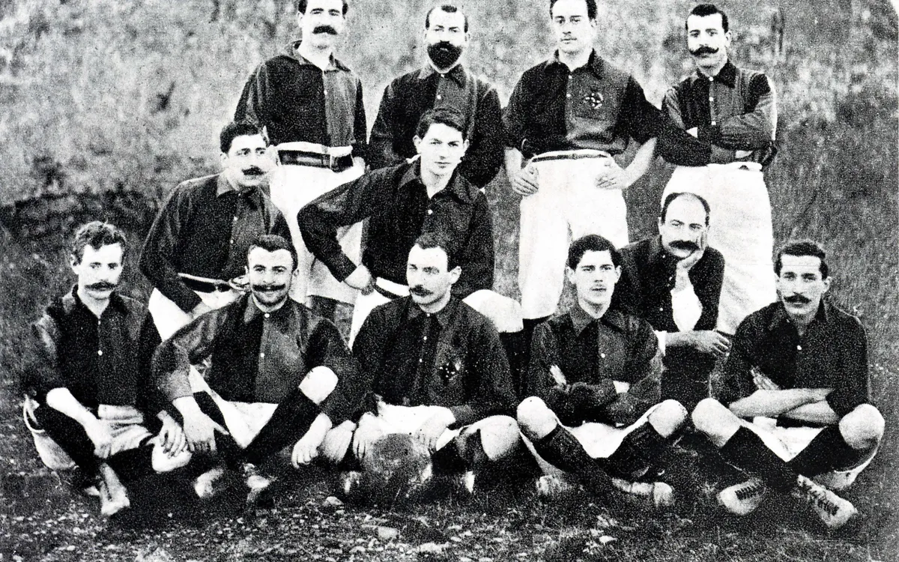

Beginnings

FC Barcelona was founded on November 29, 1899, by a group of Swiss, English, and Catalan footballers led by Joan Gamper in Barcelona, Spain. The club quickly became a symbol of Catalan identity and pride, growing into one of the most successful and influential football teams in the world.
Our Legends
FC Barcelona's legends include Thierry Henry, Xavi Hernández, and Andrés Iniesta, who formed the backbone of the team's success in the 2000s and 2010s. Other notable legends are Johan Cruyff, Sergio Busquets, Gerard Piqué, Carles Puyol, Ronaldinho, Samuel Eto'o, Luis Suárez, and Dani Alves, each of whom played pivotal roles in the club's history and triumphs.
Our Greatest
Lionel Messi spent over 20 years at FC Barcelona, becoming the club's all-time top scorer with 672 goals and winning a record 10 La Liga titles and 4 Champions League trophies. His exceptional dribbling, vision, and playmaking ability helped Barcelona achieve unprecedented success, solidifying him as the club's, and the world's greatest player and a global football icon.
Trophies/Achievements
FC Barcelona has managed to accumulate over 137 trophies over the years but some of the most significant are 27 LaLiga titles, 5 UEFA Champions League titles, and 31 Copa Del Rey titles solidifying its status as one of the most successful football clubs in history. The club is known for its distinctive style of play, La Masia academy, and its numerous domestic and international triumphs.